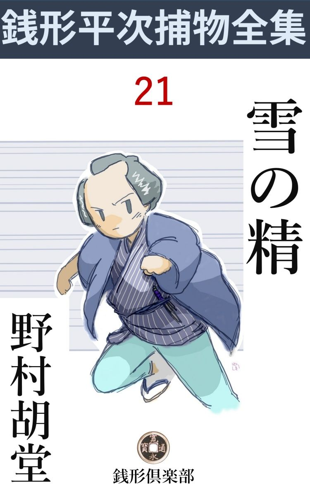
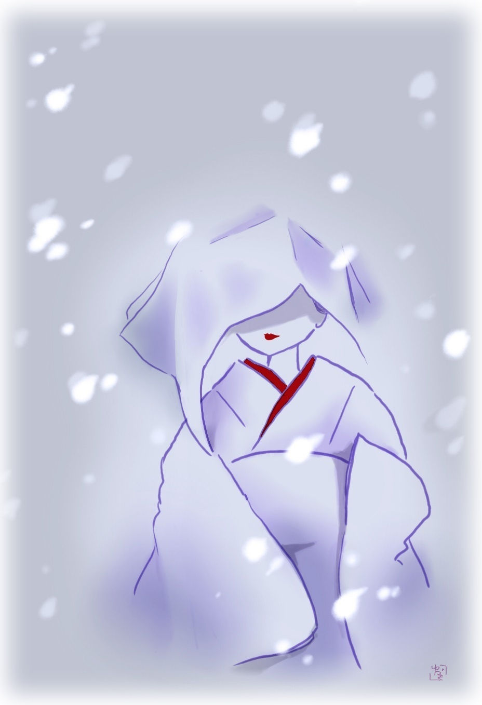

| 雪の精: 銭形平次捕物全集第21話 (銭形倶楽部) | |
| 野村胡堂 | |
| ZENIGATA CLUB (2018) | |

一
昼頃から降り続いた雪が、宵に小やみになりましたが、それでも三寸あまり積って、今戸 の往 来 もハタ絶えてしまいました。
越後屋 佐吉は、女房のお市と差し向いで、長火鉢に顔をほて らせながら、二三本あけましたが、寒さのせいか一向発しません。
「銭湯へ行くのはおっくうだし、按摩 を取らせたいにも、こんな時は意地が悪く笛も聞えないね」
「お前さん、そんな事を言ったって無理だよ。この雪だもの、目の不自由な者なんか、歩かれはしない」
そんな事を言いながら、丁度三本目の雫 を切った時でした。ツイ鼻の先の雨戸をトン、トン、トンと軽く叩く者があったのです。
「おや------」
お市は膝を立て直しました。宵とは言ってもこの大雪に往来の方へ向いた、入口の格子を叩くならまだしも、川岸 へ廻って、庭の木戸から縁側の雨戸を叩く者があるとすると、全く唯事ではありません。
「どうしたんだい」
と、佐吉。
「雨戸を叩く者があるんだよ。こんな晩にいやだねえ、本当に」
「開けて見な、貉 や狸 なら、早速煮て食おうじゃないか。酒はまだあるが、肴 と来た日には、ろくな沢庵 もねえ」
佐吉は少し酔っているせいもあったでしょう。爪 楊子 で歯をせせりながら、太平楽を極めますが、いくらか酒量の少ない女房のお市は、さすがに不気味だったと見えて、幾度も躊躇 いながら、それでも立ち上がって、雨戸へ手を掛けました。
同時に、もう一度トン、トン、トンと軽く叩く音、続いて若い女の声で、
「ここを開けて下さいな------」
と、大地の底から響くような細い声が、ハッキリ雨戸の外に聞えるのです。
「誰だえ」
お市は心 張 棒 を外すと、思い切ってガラリと開けました。
角 兵衛 獅子 の親方を振り出しに、女衒 の真似をやったり、遊び人の仲間へ入ったり、今では今戸に一戸を構えて、諸方へ烏 金 を廻し、至って裕福に暮している佐吉の女房です。鬼の亭主に鬼の女房で、大 概 の物に驚くような女ではありませんが、この時ばかりは全くギョッとしました。
外は真っ白------。
人間は愚か、貉 も狸もいる様子はなかったのです。
好い加減に積った雪は、狭い庭を念入りに埋めて、その上に薄月が射しているのですから、その辺には、物の隈もありません。庇 の下はほんの少しばかり埋め残してありますが、物馴れたお市の眼には、そこに脱ぎ捨ててある、沓 脱 ぎの下駄までハッキリ読めるのです。 '
「誰もいはしない、変だねえ」
「そんな事があるものか、今の人の声がしていたじゃないか」
「そう言ったってお前さん、猫の子もいないよ」
お市はそう言いながら、戸袋に左手でつかまったまま、まだサラサラと降る雪の中へ、何の気もなく顔を突き出したのでした。
「あッ」
恐ろしい悲鳴。
驚いて佐吉が立ち上がった時は、お市の身体は、もんどり打って、雪の庭ヘ------、真 逆様 に落ちてしまったのでした。
「何て間抜けな事をするんだ。怪我 をしないか」
佐吉はそう言いながら、縁側へ飛出して差のぞくと、お市の身体は雪の中に転落して、ノタ打ち廻りながら、
「お化 だッ」
辛 くもそう言った切り、がっくり崩 折 れてしまった様子です。見ると、頸筋から噴出 した恐ろしい血潮が、お市の半身と、その辺の雪を物凄まじく染めておりますが、見渡したところ、縁の下にも、庭の中にも、お化は愚 か、人間の片 らも見えません。
佐吉はそれでも、漸く気を取直して、女房の身体を縁側へ抱き上げましたが、何時の間にやら、行燈 を蹴飛ばして、灯りを消してしまった事に気が付きました。
「お駒、大変だッ、灯を持って来い」
少し離れているお勝手へ怒鳴 ると、
「ハ、ハイ」
居眠りでもしていたらしい、下女のお駒は、手燭 を持って飛込んで来ましたが、その時はもう、何もかも済んでおりました。お市はすっかりこと切れて、三十女の豊満な肉体を、浅ましく歪 めたまま夫の膝に抱き上げられ、越後者の、身体だけは丈夫そうな下女のお駒は、手燭を持ったまま、ガタガタ顫えているのでした。
二
「八、こう言うわけだ。石原の兄哥 の縄張りだが、利助兄哥はあの通り身体が悪くて、娘のお品さんが代って仕事をしている有様だから、どうすることも出来ない。それに、越後屋佐吉と言う人が自分でやって来て、相手が人間だか化物だか知らないが、あんまり人を馬鹿にしたやり口だから、何とでもして女房の讐 を討ってくれと言う頼みだ」
捕物名人銭形の平次は、子分の八五郎------一名ガラッ八ヘ妙にしんみりした調子で話して聞かせました。
少し人間は半間ですが、案外鼻の利く八五郎に、少しでも事件を扱わせて、行く行く立派な御用聞に仕立ててやろうと言う平次の腹でしょう。
「親分、大変面白そうだが、下手人 は一体何でしょう」
「それが解らない」
「鎌 鼬 か何かじゃありませんか」
小さい旋風 が空中に真空の場所を作るために、そこへ行合わせた人の皮肉を破って、体内の空気が出ることがあるのを、昔は鎌 鼬 又は神逢 太刀 と言って恐れたものです。
「相変らずお前はお先っ走りだね、庭の雪には下駄の跡があったんだよ」
「ヘエ------」
「鎌鼬がまさか下駄を穿 いて来はしまい」
と平次。
「それじゃ矢張り人間かな」
どうも甚だ血の廻りが宜しくありません。
「お市とか言う女房の喉 笛 を下から飛付いて掻き切ったんだ。兎に角人間には相違ないだろう」
「佐吉夫婦に怨 のある人間はありませんか」
「あり過ぎるほどだ」
「厄介な野郎だネ」
「角兵衛獅子の親方と、女衒 と、金貸しをやってたんだ。どこに敵がいるかわかるものか」
「ヘエ------」
「ここで考えたって始まらないよ。兎に角、行って見るがいい、思いの外手軽に解るかも知れない」
「親分は？」
「俺はそれからの事にしよう。他に用事もあるから、兎に角、今戸の殺しはお前に任せるよ。宜いかい、八」
「弱ったなア」
「弱ることがあるものか、八五郎もこの辺が手柄の立て所じゃないか」
「そう言えばそれに相違ないが」
子分思いの平次は、これほどの手柄を、ガラッ八に譲 ってやるつもりでしょう。二つ三つ肝腎 な注意をすると、わが子の初陣 を送り出す親のように、緊張した心で今戸 の現場へ送り出してやるのでした。
ガラッ八が越後屋へ着いたのは、事件のあった翌る日の昼頃、係り同心が町役人と一緒に引揚げた後で、お市の死体は奥の一と間へ寝かし、三輪 の万七という顔の古い御用聞が、二人の子分と、振舞 酒 に酔って、ボツボツ引揚げようという間際でした。
「お、八兄哥か、大層鼻が良いんだネ」
と万七。まさか主人の佐吉が、親分の平次へ頼みに行ったことは知りません。相手が甘いと見て、少しからかい 面になります。
「三輪の親分御苦労様で、------石原のが身体が悪いんで、あっ し が申訳 だけに覗きに来ましたよ。三輪の親分がいて下されば、ここから帰っても宜い位のもので、------ヘッヘッヘッ」
これは、親分の平次に、万一、三輪の万七に逢ったらこうとくれぐれも教わって来た口上。まことに行届いておりますが、お仕舞いのへッヘッヘッだけが余計です。
そう言われると、万七も悪い心持はしなかったのでしょう。それに、どっちにしても石原の利助の縄張りうちで、八五郎をからかい過ぎるわけにも行かず、もう一つは、事件がいやに神秘的で、容易に見当が付きそうもないと思ったのでしょう。
「そう言われると年寄の出しゃ張る幕じゃないようだ。八兄哥、話は聞いたろうが、どうもこの殺しは見当が付かないぜ」
そう言いながら、二人の子分と顔を見合わせて、妙にニヤニヤしております。
意地の悪そうな四十男。世上の噂では、二足 の草鞋 も穿いていると言う話、八五郎の相手には、少し荷が過ぎます。
三
越後屋佐吉と言うのは、四十を越したばかりの、北国者らしい鈍重 なうちに、何とかく強 か味のある男ですが、女房が不思議な殺されようをしたので、さすがに、すっかり度を失っております。
早速八五郎を一と間へ案内して、北枕 に寝かしてある、女房お市の死体を見せてくれました。覆 いを取ると、斬られて死んだ者によくある、白蠟 のような感じのする顔で、年の頃三十五六、神経質な口やかましい女ということは、八五郎にもよく受取れます。
傷 は頸の右の方から喉笛へかけて、斜 一文字に深々と口を開いて、見るも無気味な有様、これでは一たまりもなかったでしょう。
「血が出ましたか」
「出たの出ないの------庭の雪が真っ赤になりましたよ」
有名な銭形の平次が来ずに、少し好人物らしい子分の八五郎が来たのが、佐吉の癪 にさわったのでしょう、物の言いようが少しばかり、突慳貧 です。
「フーム」
ガラッ八は唸 りました。
「八兄哥、血のことを気にするようじゃ、鎌 鼬 という見当だね。鎌鼬は傷の深い割に血の出ないものだって言うが、江戸は上様 のお膝元で、鎌鼬は昔から出ねえことになっているぜ」
と首を出した万七。冷笑気味な口吻 ですが、馴れた目だけに、どこか鋭いところがあります。
「------」
ガラッ八は黙って点頭 きました。鎌鼬でないことは、親分の平次にも言われましたが、傷口の反 り具合があまりに見事だったので、ツイ自分の最初の心に立ち返ったのでした。
「それによ、八兄哥。左利きの鎌鼬ってものはあるめえ」
万七は言い得て妙と言った顔で、死体の右の頸筋------人間の手で上から切り下げた、斜 の傷口を指すのでした。
「曲者は下駄を履 いていたそうですね」
とガラッ八。
「踏み荒してしまったが、まだ庭に雪がありますから、見当位は付きます。こうお出でなさい」
佐吉に案内されて、次の間へ行くと、縁側に近く長火鉢を置いて、すべての調度は昨夜のまま、障子を開けて一と目庭を見ると、成程散々に踏み荒しましたが、消え残る雪の上には、血とも煤 とも付かぬ程度に、薄赤い斑点 が見られないことはありません。
「下駄の跡は一人でしたか」
「庭の中にはかなり足跡もありましたが、皆んな同じ歯の跡で、木戸から入って出たのは一人分だけでしたよ。」
ガラッ八も途方にくれました。十坪ばかりの狭い庭には、亭主の殺風景な性格を反映して、石一つ、植木一本ない有様、僅かに戸袋の側の手洗 鉢 の下に南天 が一株 ありますが、それと言っても、人間が潜りもどうも出来るほどのものではなく、狭い場所一パイに建てた家で、たった一つの庭木戸の外には、往来へ出る道も、表へ廻る路地もありません。
「木戸の向うは川岸 っ縁 の往来ですね」
「そうですよ、あの雪で昨夜は人通りも少なかったようですが、それでも宵のうちですから、チラホラ、通らないことはありません」
と佐吉。
「この辺に、お前さんを怨 んでいる者はありませんか」
「ありますよ、どうせ良く言われっこのない性分で、町内の人が皆んな敵見たいなものでさア------」
少し言い草は乱暴ですが八五郎の半間な調子に業 を煮やした故 もあったでしょう。佐吉は忌々 しそうに舌打をしました。
四
「雇人 は？」
「二人いますよ。一人は越後者で、お駒と言う下女、一人は房州 者 で、これは借金の取立てや使い走りをさせておりますが、与次郎という男。もっとも、この与次郎の方は、町内の銭湯へ行っていて、女房が殺された時は家にいませんでしたよ」
佐吉のそう言うのを聞きながら、八五郎は障子を締めると、今度は家の中の間取りを見て廻りました。入口の格子の右が女中部屋で、その先がお勝手、お勝手はすぐ横町の路地へ、木戸一つで通ずるようになっておりますが、御用聞の出入りがあるので、この辺の雪も踏み荒されております。
入口を隔 てて、左が死体を置いてある部屋、その奥が夫婦の居間で、これは昨夜事件のあったところ。妙な間取で、座敷か納戸 を通らなければ、居間から直接お勝手へは出られません。
下女のお駒は、流し元で遅い朝飯のお仕舞をしておりました。二十三四の色白の女で、様子もそんなに悪くありませんが、半面の大 焼痕 で、顔を見るとがっかりします。
姉妹二人、角兵衛獅子に売られたのを、佐吉が引取って暫く稼 がせていましたが、角兵衛を廃業 してからは、下女にして使って、少しは給金でも溜めさせて、故郷の越後へ帰すつもり------、と佐吉は問わず語りに説明してくれました。
もっとも、このお駒というのは、妹の方で、姉はお才 と言って、大変に良い縹緻だったが、一年ばかり前に死んでしまった------とこれも佐吉の話。自分の事を噂されながらも、お駒は鈍感 な女によくある無関心さで、機械的にお勝手の仕事を続けております。
「お駒さん、昨夜 は驚いたろう」
ガラッ八が水を向けると、
「驚いたよ、お神さんがおっ死 んだんだもの」
何を当り前な事を------と言わぬばかりの面構 は、すっかり我が名御用聞の八五郎を憂欝 にしてしまいます。
「お神さんの殺された場所で、何か見るか聞くかしなかったかい」
「旦那が大きな声で、灯 を持って来いって言うから、棚 の上の手燭へ灯を移して、大急ぎで飛んで行っただよ、何も聞くもんか」
これでは取り付く島もありません。
角兵衛獅子をやって歩いたというのは、多分十年も前のことでしょう。見たところ、楽な奉公によく肥って、そんな芸当をやった身体とも見えないのです。
ガラッ八は仕様事なしにお勝手口の外を眺めました。取込みでろくに雪も掻 かなかったのでしょう、下男の与次郎が、浅葱 の手拭を頬 冠 りに、竹 箒 でセッセと雪を払っております。師走 の薄い日に、昨夜の雪がまだ解けそうにもないのですから、仕事をしていると、寒さが骨身にこたえるのでしょう、時々立止っては、ハアーと拳骨 に息を吹掛けております。
「八兄哥 」
後ろから、肩を叩いたのは、三輪 の万七。
「何ですえ、親分」
「気が付かないか」
「ヘエ------？」
「それなら宜い、後で縄張りがどうの、石原がこうのって文句は言わないだろうな？」
妙に絡 んだ物の言い廻しです。
「下手人の目星でも付きましたか」
「そうだよ。八兄哥、後学のために話そう、あれを見るが宜い」
万七の指したのは、お勝手の外を掃 いている、与次郎の箒 を持つ手です。
「------」
「あの箒を持つ手が、恐ろしく不自由なのに気が付かないかい」
「そう言えばそうかも知れませんネ」
「そうかも------じゃないよ、あの与次郎と言う男は確かに左利 きだ」
「えッ」
「先刻、下手人は左利きだ------って俺が口を滑らしたのを小耳に挾 んで、疑われたくないばかりに、不自由な思いをして右利きのような顔をして、俺達から見えるところで雪を掃いてるんだ。イヤな細工じゃないか」
「成程」
万七に注意されて、そっと与次郎の方へ目を走らせると、箒を持ったのは右手には相違ありませんが、成程不自由そうで、その作為 のあとが、一と目でわかります。
「主人に聞くと、あの野郎、たしかに左利きだと言う事だ。ね、八兄哥、御用聞はこう言う細かいところへ眼が届かなくちゃ物になられえよ」
万七はそう言いながら女物の下駄を突かけてお勝手口へ出る。
「与次郎とか言ったネ、ちょいと訊きてえことがある、番所ヘ一緒に来て貰おうか」
釘抜 のような手が、ピタリと、箒を持つ手頸に掛りました。
「あっ、何をするんだ」
立ち竦 んだ与次郎、浅葱 の頬冠こそしておりますが、苦味走った三十男、咄嗟 の間に、万七の手を振りもぎって逃げようとすると、
「御用ッ」
「神妙にしろッ」
路地から二人の子分が疾風 の如く飛込んで来るのでした。
五
万七にしてやられて、ガラッ八の八五郎は、驀地 に神田へ取って返しました。
「親分どうかしておくんなさい。私はこんな恥を掻かされたことがない」
「馬鹿野郎、又何かドジな真似をしたんだろう。見て来た通り、真っ直ぐに話してみな」
銭形の平次は、八五郎を叱 り飛ばして、報告の順序を立てさせました。
「何？ 庭には、川岸 の往来に向いた木戸より外に入口も出口もねえ、------銭湯へ行ったと言う、与次郎が疑われるわけだな、足跡の様子では下駄は、女物か、男物か」
「それが時が経っているのと、散々に踏み荒しているから、まるっきり解らねえ」
「仕様がねえなア、銭湯へは行って訊いたろうな、越後屋の女房が殺された時刻に、与次郎が行っていたかどうか」
「そんな事に抜 りはねえ。朝日湯の番台の親爺に訊くと、亥刻 （十時）少し前にやって来て、自慢の咽 で新内を唸りながら半刻 ばかりポチャポチャやっていたって言いますぜ」
「人でも殺そうと言う程の野郎なら、わざと半刻位は下手な新内でも唸っているだろう。後か先に、ほんのちょいと庭口ヘ廻れば、仕事は済むんだから」
「親分までそのつもりじゃ話が出来ねえ」
ガラッ八はすっかり悄気 てしまいます。
「ところで、死骸の傷は斜横に真一文字に付いてると言ったね」
「そうですよ」
「鎌 鼬 なら、銭形に付くか、筋か骨に添って曲った傷が付くから、矢張り人が切ったに間違いはないね、------ところで、切口の肉は、どんな工合になっているんだ」
「それが可怪 いんだよ、親分、恐ろしく反 って、何かこう鉞 ででも割いたような工合だ」
「斧 や鉞で、喉 を割く奴はあるまい、峰 の高い刃物------多分合せ剃刀 かな」
「えッ」
合せ剃刀と睨んだのは慧眼 ですが、それにしても下手人は益々わからなくなるばかりです。
平次は到頭今戸 まで出掛けて見る気になりました。三輪の万七の鼻を明かすつもりは毛頭なかったのですが。
「下手人は左利きと聞いて、自分の左利きを隠そうとしたと言うのはおかしいな。そんな事をしたところで、主人か下女に訊かれれば、すぐ解ることだから、脛 に傷持つ者なら、反ってそんな細工はしたい筈だ。これは少し面倒なことになるかも知れないよ」
平次はそう言いながら、ガラッ八を案内に、今戸へ出かけて行ったのです。
越後屋へ行く前に、近所でいろいろ噂を聞いて見ましたが、佐吉夫婦の評判はまことに散々で、冗談にも褒める者は一人もありません。
欲が深くて因業 で、若い時から随分人を泣かせて来た様子ですから、どこに深怨 の刃 を磨く者があるかもわからない情勢です。
下男の与次郎が、殺されたお市と何か関係でもあるのではないかと言う疑いも、一応は持ってみましたが、これも問題になりません。お市は四十近く、与次郎は三十になったばかり、女の方はヒステリックな、どちらかと言えば醜女 で、与次郎は、こんな仕事をしている者には勿体ないような好い男、町内の娘っ子が大騒ぎをしているばかりでなく、岡場所やけころ へ握 り拳 で出かける程の色師です。
金が目当て------と言うことも考えられますが。それなら、女房だけ殺して、姿を隠したんでは一文にもならず、二度出直す時間もあった筈なのに、それっきり逃げ出してしまったのは、多分、下手人の方でも、人を一人殺して、面喰ったためだろうと思われます。
平次は一応家の内外を調べた上、いよいよ自分の考えを確 めたらしく、主人の佐吉に何やら耳打ちをして、誰を縛るでもなく、懐手のまま神田へ帰ってしまいました。
それから三日目の朝、越後屋の佐吉は、蒼 くなって、平次のところへやって来ました。
「親分、昨夜 もやって来ましたよ」
「えッ」
「与次郎が縛られたから、それで宜いのかと思うと、あれは三輪の親分の見当違いでしたね」
「どうなすったんだ。詳 しく話して見なさるが宜い」
平次も思わず膝を乗り出します。
「こうなんです、------女房の葬 いを済ませて、やれやれと思うと、又雪でしょう。お駒に一本つけさして長火鉢の前でチビチビやっていると、彼れこれ亥刻 過ぎだったでしょう。庭の雨戸を、又トン、トン、トンと叩く者があるのです」
「------」
平次も、側で聞いているガラッ八も。思わず、ぞっとしました。
「暫く黙っていると、女のか細い声で、------ちょいと開けて下さい------と言ったようですが、何分あの騒ぎの後でしょう、頭から水をブッかけられたようになって、恥 かしい話ですが動くことも出来ません。そのまま凝 っとしていると、それっきりあきらめて帰った様子です」

「------」
「翌る朝、夜の明けるのを待ち兼ねて、庭を開けて見ると、下駄の跡が一パイ」
佐吉はゴクリと固唾を呑みます。
「それは面白くなって来た------越後屋さん、帰ったら、近所中へこう言いふらして下さい------昨夜 も変 な野郎が来て今度は俺を誘 き出そうとしたが、雪のせいで腹が痛くて顔を出せなかった。今度来たら、キッと女房の下手人の顔を見定めてやるから------と」
「少しも面白くはありませんが、やって見ましょう。だが、私はもう一度来ても、顔を出すのは御免を蒙 りますよ」
強 か者らしい佐吉も、この『見えざる敵』にはすっかり脅 かされた様子です。
「大丈夫、相手は雪の晩でなきゃア来ないと解ったようなものだから、この次の雪の降る晩に、私か八五郎が、そっと戌刻 （八時）前から行って庭口から入れて貰いましょう。それなら心配はないでしょう」
「へエ------、まア、そうまでして下されば」
佐吉は呑 込 兼 ねた様子で帰って行きました。
六
よく雪の降った年ですが、それから七日ばかりは晴続き、押詰って、二十四日、夕景から催 した雪が、宵には綿を千切って叩き付けるような大降りになりました。
越後屋から迎えを待つまでもなく、ガラッ八は今戸へ駆け付け、庭口からそっと例の部屋へ入り込みました。
飲み物も食い物もフンダンに用意させましたが、人が来ることは誰にも話させず、下女のお駒も、宵のうちから床へ入れて楽寝をさせ、佐吉一人、淋しく待っているところへ、八五郎が行ったのですから、佐吉の喜びと言うものはありません。
半分は手真似 で物を言って、長火鉢を間にした差向い、妙に黙りこくって飲んでいると、やがて、亥刻 過ぎ。
雨戸は一種のリズムを持って、トン、トン、トンと鳴ります。八五郎は懐の十手を抜いて、そっと立上がると、
「待って下さい。私の顔を先に見せなきゃア、逃げるかも知れません」
佐吉もすっかり胆 が坐った様子で、八五郎を押えると、雨戸へ手を掛けてサッと押し開けました。
闇から湧き上がったように、サッと吹込む一団の吹雪、それに包まれると見るや、
「あッ」
佐吉は額を押えて縁側へ倒れました。
「曲者ッ」
続いて八五郎、一気に闇の庭へ、跣足 で飛降りましたが、四方は塗り潰 したような大 吹雪 で、黒い犬っころ一匹見付かりません。
引返して見ると、額から頬へ見事に斬り割かれた佐吉、漸 く起き直って、血だらけな半面を両手で押えているのでした。
それからの騒ぎは書くまでもありません。幸い傷は浅かったので、用意の焼酎 で洗って、晒 でグルグル巻くと、寝呆けたお駒を叩き起して。町内の外科を呼ばせました。
少し落着いたところで、いろいろ訊いて見ましたが、唯、雨戸を開けると同時に、一団の白い吹雪を顔へ叩き付けられたように覚えると、額から頬へ、焼鏝 を当てられたように感じて引くり返ったと言うだけの事、誰が斬って、どうして逃げたかまるっきり見当も付かない始末です。
翌る朝、神田から銭形の平次が駆け付け、三輪の万七もやって来ましたが、庭の足跡は、踏み荒されない代り、今度は雪に埋まってしまって、八五郎が入ったのも定かでない有様、曲者はどこから来て、どこへ逃げたか、嗅ぎ出す手掛りと言うものは一つもありません。
散々責めたが、何としても白状をしない与次郎は、これを機会 に許されて帰りました。お市を殺したのも、佐吉を襲 ったのも、手口は全く同じことですから、三輪の万七も、この上与次郎を責める口実もありません。
それに、銭形の平次は、
「三輪の、そう言っちゃ済まないが、下手人は左利きじゃないよ」
と言い出したものです。
「えッ、どうしてそんな事が解るんだ」
万七の唇は少し尖 りますが、平次は事もなげに、
「刀か脇差だと、これは左利の業だが、傷の工合じゃ、どうしても得物 は合せ剃刀 だ。ネ、そんな短かい物で人の命でも奪ろうとすると、逆手 に持たなきゃア役に立たないよ。右の喉笛や、右の頬を、斜 に斬り下げたのはそのためだ。突き傷のように、恐ろしい力で下へ斬り下げているだろう」
「なある------」
三輪の万七、一言もありません。'
併し、右利きとわかったところで、下手人の当りが付いたわけではありません。右利きは左利きの十倍もあるのですから、僅かに、与次郎が下手人でないと言うことが、消極的に解っただけの事です。
七
その時、妙な者が訪ねて来ました。
「銭形の親分さんが来ていなさるそうですが、ちょいとお目にかかって申上げたいことがあります」
お駒に取次がせたのは、この辺に網 を張って、吉原へ通う客を拾う辻 駕籠 の若い者------、と言ったところで、四十過ぎの世帯 疲 れの目立つ、不景気な駕籠屋が二人でした。
「私に用事と言うのは、お前さん達かい。取込み中で、お通しは出来ないが、ここで聴かして貰いましょう。どんな事なんだい」
銭形の平次は、上框 へ煙草盆をブラ下げて来て、お駒に座布団などを持って来させました。
「咋夜、実は妙なことがあったんです。------言おうか言うまいか、相棒とも相談したんですが、ここのお神さんが殺されたり、旦那が怪我をなすった------ことを聞くと、黙ってもいられません」
「そうともそうとも、気の付いた事があったら、何でも話した方が宜い。決して掛り合いなどにはならないようにしてやるから」
「有難う御座います、実はこうなんで、親分さん------」
年取った駕籠屋の話と言うのは、実に奇怪を極めました。
------昨夜、亥刻 少し過ぎ、この二町ばかり先の稲荷 の祠 の前で、降る雪を凌 ぎながら、少し小止みになったら、馬道の方へでも出て、吉原通いの客を拾おうと相談をしていると、どこから出て来たか、チョコチョコと現われた一人の娘が、白い手拭 を吹き流しに冠って、観音様まで大急ぎでやってくれと言ったのだそうです。
どうせ帰り道、相手は新造ですから、賃 銀 なんか宜いかげんに定めて、駕籠の垂 をあげると、娘は小風呂敷包を持ったまま、馴れた調子でポンと乗りましたが、わざわざ寒い川岸を通らせて此家 の裏口のあたりまで来ると、急に用事を思い出したから、ここで降ろしてくれと言うのです。
争うほどの事でもないので、そのまま駕籠を停めたのは、ちょうど此家 の裏口、垂を上げると、中から出たのは、先刻の松坂 木綿 らしい粗末な綿入を着た娘とは似も付かぬ、縮緬 の白無垢 を着て、帯まで白いのを締めた、鷺娘 のような、凄まじくも美しい新造だったと言うのです。
狭い駕籠の中で、どうしてそんな早変りが出来たか、渡世の駕籠屋も想像が付きません。兎に角、急に臆病風に誘 われて、定めた駕籠賃ももらわずに、山の宿の方ヘ一散に逃げ出してしまったと言う話------。
「親分さん、お狐様かお雪娘か知りませんが．どうもろく なもんじゃ御座いませんよ。御用心なさいまし。ヘエヘエ------こんなにお駄賃 を頂いてはすみません」
二人の駕籠屋は、余分の駄賃を貰った上、所、名前を言って帰ってしまいました。
「ね、銭形の、こいつは鎌 鼬 じゃなくて、お稲荷様かも知れないぜ。主人は鳥居へ小便でも掛けたことがあるんじゃないか」
万七は妙にニヤリニヤリしておりますが、平次はそれを聞くと、追っ立てるように外へ飛出しました。
裏口は往来を距てて大川。
もう少し先へ行くと都 鳥 と、瓦屋 が名物ですが、この辺はまだ町の中で、岸にはいろいろのゴミが、雪と一緒に川面 を埋めております。
「八、物干 竿 を一本貸りて鳶 口 を結 えて来い」
「へエ------」
持って来た二間竿。
先に鳶口を付けて、川面の雪と雑物とを掻き廻して行くと、間もなく妙なものが引っ掛りました。
「おやッ」
引上げて見ると、少し碧 血 に染んだ白 無 垢 。紐で縛ってありますが、ほどくと、まぎれもない上質の白 縮緬 で、白羽二重帯まで添えてあるのです。
「おやッ、これはお葬 で着るのとは違うぜ」
と万七。
「吉原 で、花魁 が八朔 に着る白無垢だよ。三輪の、お狐様じゃないようだね」
平次はそう言って、考え深く水 漬 りの白無垢をひろげました。
八
白 無垢 は出ましたが、下手人はそれっきりわかりません。娘を乗せて来たという駕籠屋まで引張り出して、来た道を逆 に、稲荷の社 まで探して行きましたが、その辺には、佐吉の烏 金 を借りて、ひどい目に逢わされている家は、門並の有様ですから、どこの娘をしょっ引いて宜いのか、縛ることを好きな万七も、手の下しようがなかったのです。
佐吉のために、身を売った娘もあろうし、女衒 の真似をしている時、散々人も泣かせた筈ですから、怨 を買った覚 は算 え切れないほどあるでしょうが、しかし、八朔 の白無垢を着て、雪の夜に吉原から忍んで殺しに来るほどの大胆な花魁 があろうとは想像も出来ないことです。
佐吉の傷は間もなく平癒 し、お駒と与次郎は、相変らず忠実に勤めておりますが、それからは、別に変ったこともありません。もっとも、佐吉が強欲で、二人の給金を何年越払わないそうで、イヤな思いをしても、急に飛出すわけには行かない事情もあったようです。
その次に雪の降ったのは、明けて翌年の正月十三日。この時は朝から粉雪が降り続いて、夕刻には、三寸ばかり積り、それからカラリと晴れて、大変な美しい月夜になりました。
「今晩きっと下手人を探してお目に掛けますから、掛り合いになった人を、皆んな集めて置いて下さい」
平次からの使で、八五郎が越後屋へそう言いに行ったのは夕暮。それから支度に取りかかって、三輪 の万七とその子分、銭形の平次とガラッ八、それに与次郎とお駒、主人の佐吉、これだけ集めて置いて、いつぞやの駕籠屋二人に、酒手 をやって稲荷様の前に網を張らせ、浅草へ行く娘でなければ、乗せてはならぬと言い付けて置きました。
相変らず酒が出ます。お勝手も入口も締めず、用心が悪いようですが、名題の御用聞が二人いるのですから、空巣狙 の心配もなく、今晩は例の居間の長火鉢の前へ、一人残らず集まってしまいました。
亥刻 少し過ぎ、何となく夜の寒さが、背に沁 み渡る頃、みんなが期待した通り、------
トン、トン、トン、
雨戸は鳴ります。一同はぞっと顔を見合せました。続いて、
「ちょいと、ここを------」
と、か細い女の声。佐吉も子分達もガラッ八も与次郎も顔色を失いましたが、一向平気なのは銭形の平次だけ。中でもお駒は袖に顔を埋めて、畳の上に突っ伏してしまいました。
「サア、お駒さん。お前でなきゃアならない事がある。行ってあの雨戸を開けるんだ」
と平次、ガタガタ顫 えているお駒を抱き起すように、縁側へ伴 れ出しました。
続いて、万七、佐吉、ガラッ八、与次郎。
「お駒さん。確 りするんだ。あれは、お前の姉さんのお才 だよ、玉屋小三郎の抱 、一時は全盛を謳 われた玉 紫 花魁 だ。怖 がることはない」
「あれッ------」
お駒は振りもぎって逃げようとしましたが、平次は後ろから羽掻締 にして、離そうともしません。
続いて又、トン、トン、トン、と叩く音、陰 に籠ったその物凄さと言うものは------。
「お駒さん、あれ、あれ、お前の姉さんが呼んでいるじゃないか。越後屋佐吉------ここの主人に、角兵衛獅子で何年となく虐 め抜かれた上、年頃になって、光り輝やくように美しくなると、自分の娘分にして、玉屋へ年一杯に売り飛ばされ、その上、佐吉夫婦が、絞 って、絞って、絞り抜いて、悪い病気に罹 って、身動きの出来なくなるまで絞り取られた姉のお才だ」
「------」
平次の言葉は、物凄い空気の中に、地獄の判官の宣告のように響きました。
「お前の姉が、佐吉夫婦を怨 んで、糸のように瘦せ細った身体で、頸 を縊 って死んだのは、丁度一年前、佐吉夫婦を怨んで、よく似合うと言われた八朔 の白 無 垢 を着て、雪の夜を選んで仕返しに来るのも無理はない。------これだけ話せばあの外から雨戸を叩くのは。誰だかよく解るだろう。さア、お駒、怖がることはない。思い切って開けて見るが宜い。そら、又叩いているじゃないか------」
何と言う恐ろしい緊張でしょう。主人の佐吉は積悪 に責 めさいなまれるように、縁側へ崩折れてガタガタ顫 え、ガラッ八も、与次郎も、万七でさえも、顔色を失って、成行 を見詰めるばかりです。
「お駒、お前が開けなければ、俺が開けてやる。それ」
平次の手は雨戸にかかると、アッと言う間もなく一枚引開けましたが、外は、雪の上に照る十三夜の皎 月 。狭い庭はたった一と眼に見渡されますが、物の翳 もありません。
「玉 紫 の花魁 。よく聴くが宜い、お前の妹のお駒は、一生困らぬだけの金を持たせて、明日にも故郷の越後へ帰してやる。もうここへ出ちゃならねえぞ、解ったか------南無阿弥陀仏」
平次が月の庭へ手を合せて拝むと、お駒も、佐吉も、ガラッ八も、釣られたように、念仏を称 えて、白々とした庭を眺めやるのでした。
明る日、お駒は溜 った給料を受取った上、外に手当百両を貰い、平次とガラッ八に送られて、故郷の越後へ発ちました。確かな道 伴 を見付けて、板橋から別れる時、
「親分、この御恩は忘れません」
お駒は何べんも何べんも繰り返して、江戸へ引返す平次の後姿を拝んでおります。半面大 焼痕 の醜 い女ですから、道中も先ず無事でしょう。平次は重い荷をおろしたような心持で、ガラッ八と一緒に帰って来ました。
「ね、親分。あの下手人は玉紫とか言う花魁 の幽霊なんですかい」
とガラッ八、少し獅子 ッ鼻 がキナ臭くうごきます。
「馬鹿、幽霊が人を殺してたまるもんか」
「すると」
「お前だから話すが、人に言うな、あれは皆んな、お駒の細工さ」
「へエ------」
「お勝手からそっと出て、遠廻りして庭木戸を入って、姉の仇 を討つつもりだったんだよ。帰る時は身体が軽いから、羽目を越して下肥汲 の通る細い路地から、アッと言う間に自分の部屋へもぐり込んだのさ------」
「白無垢で、雪の晩だけねらったわけは？」
「白無垢は姉の形見 さ。あんなものが、玉屋から届いたガラクタの中にあった事を、佐吉も気が付かなかったんだ。稲荷様へ行って、駕籠へ乗って中で着 換 えたのは、わざわざ遠方から来た、怪物 に見せようと言う細工さ。あの女はあれでなかなか馬鹿じゃないんだよ」
平次の話は明快ですが、たった一つ、まだガラッ八にも解らないことがあります。
「昨夜 のはすると誰です。お駒も中にいた筈だから------」
「馬鹿だなア。お品さんは、そんな亊にかけちゃ、申分のない役者だよ。稲荷 様から辻駕籠に乗って、お駒がやった通りに運 んだまでの話さ------そうでもしなきゃア、佐吉は百両と言う大金を出す気にならないだろうし、何時かはお駒が下 手 人 と言うことが解って、三輪の万七兄哥などに縛られるよ」
昨夜 の白 無 垢 は、石原の利助の娘のお品とは、佐吉も万七も、当のお駒も気がつかなかったでしょう。
「へエ、そんな事をしても宜いんでしょうか」
「何をつまらない。御法度 の敵討 さえ、筋が立てば、大ビラにやらせる世の中じゃないか。姉妹二人十何年も死の苦しみを嘗 めさせられて、その上姉が首を吊 ったんだ。その仇 を討った妹を縛れって言うなら俺は十手をお上へ返すよ」
平次は感慨深くそう言いました。滅多に人を縛らぬ、一名縮尻 平次は、こうして『雪の精』を見逃してしまったのです。
（編注）
作品中には、身体の障害や人権にかかわる、差別的な語句や表現が見られますが、本書が成立した当時の時代背景等が現代とは異なる古典的な文学作品でもあり、著者が故人でもありますので、底本のままとしました。ご理解、ご諒承のほどをお願い申し上げます。
著者---野村胡堂
挿絵---萩 柚月 © 2017
初出---「文藝春秋オール讀物號」昭和七年十二月号 文藝春秋社
底本---「錢形平次捕物全集」第一巻 河出書房 昭和三十一年五月五日初版
編集・発行 銭形倶楽部